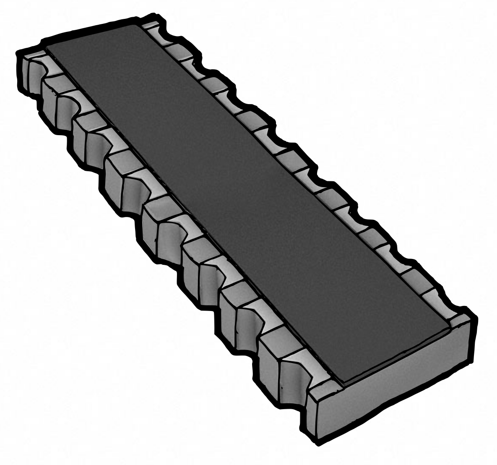
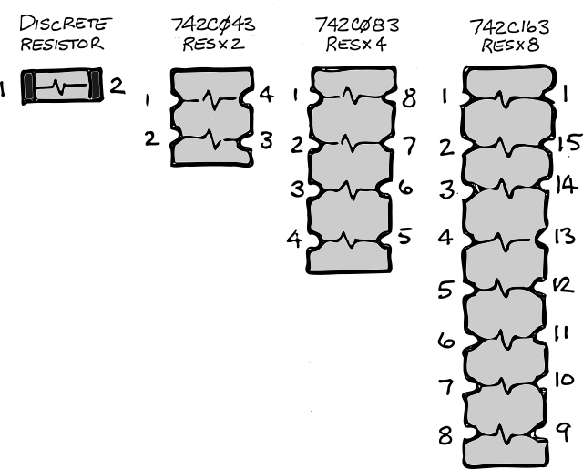

Sometimes you need a quick circuit that does one, specific thing. Other times, you want to create a general design that can be re-used in multiple instances. I'll demonstrate the evolution from a specific to a general SKiDL design using a simple set of LEDs.
Four LEDs
Here's a simple SKiDL module that instantiates four common-cathode LEDs with current limiting resistors:
def leds(inp0, inp1, inp2, inp3, gnd):
# Create four LEDs and resistors.
leds = 4 * Part("Device", 'LED', footprint='KiCad/LEDs.pretty:LED_0603', dest=TEMPLATE)
rs = 4 * Part("Device", 'R', value='330', footprint='KiCad/Resistors_SMD.pretty:R_0603', dest=TEMPLATE)
# Connect anodes (+) of LEDs to inputs.
leds[0]['A'] += inp0
leds[1]['A'] += inp1
leds[2]['A'] += inp2
leds[3]['A'] += inp3
# Connect current-limiting resistors between LED cathodes (-) and ground.
rs[0][1,2] += leds[0]['K'], gnd
rs[1][1,2] += leds[1]['K'], gnd
rs[2][1,2] += leds[2]['K'], gnd
rs[3][1,2] += leds[3]['K'], gnd
This module is simple, to-the-point, and limited to four LEDs. But sometimes you'll want more than that, other times, less. The next module adds that flexibility.
Pick-A-Size LEDs
The module below supports any number of common-cathode LEDs by querying the number of lines in the input bus and instantiating the required number of components:
def leds(inps, gnd):
# Use the width of the input bus to set the number of LEDs and resistors.
leds = inps.width * Part("Device", 'LED', footprint='KiCad/LEDs.pretty:LED_0603', dest=TEMPLATE)
rs = inps.width * Part("Device", 'R', value='330', footprint='KiCad/Resistors_SMD.pretty:R_0603', dest=TEMPLATE)
# Zip the inputs, LEDs, and resistors together so there is one input
# associated with each LED and resistor. Then, connect them together.
for inp, led, r in zip(inps, leds, rs):
led['A'] += inp # Connect an LED anode to an input.
r[1,2] += led['K'], gnd # Connect a resistor between the LED cathode and ground.
This is more flexible, but a bit less clear and still limited to building common-cathode LEDs (where the LEDs are turned on by raising their inputs to a positive voltage). But I'm out of luck if I want common anode LEDs that light up when I lower their inputs to ground. The next module adds that capability.
Common-Cathode or Anode?
The code below supports both common-cathode and common-anode LED configurations by allowing either the anode or the cathode inputs to be a bus controlling the individual LEDs while the other input is the common terminal:
def leds(anodes, cathodes):
# Either the anode will be connected to VCC or the cathode will be connected
# to ground and will have a width of 1. The width of the other input bus will
# determine the number of LEDs.
width = max(anodes.width, cathodes.width)
leds = width * Part("Device", 'LED', footprint='KiCad/LEDs.pretty:LED_0603', dest=TEMPLATE)
rs = width * Part("Device", 'R', value='330', footprint='KiCad/Resistors_SMD.pretty:R_0603', dest=TEMPLATE)
# Zip the LEDs and resistors together so there is one LED associated with
# each resistor. Then, connect them together.
for led, r in zip(leds, rs):
led['K'] += r[1]
# Now connect the anodes inputs to the LED anodes. If anodes is a single wire,
# then all the LED anodes will connect to it (common anode). But if the anodes
# input is a multi-wire bus, each LED anode will connect to its own bus line.
anodes += [led['A'] for led in leds]
# Finally, connect the cathodes input to the other end of the resistors.
# If cathodes is a single wire, then all the LED cathodes will connect to
# it through their current limiting resistors (common cathode). But if
# the cathodes input is a multi-wire bus, each LED cathode will connect
# to its own bus line.
cathodes += [r[2] for r in rs]
As a test of the module, I attached three, common-cathode LEDs to a PIC18F microcontroller unit like this:
if __name__ == '__main__':
v3_3 = Net('+3.3V')
gnd = Net('GND')
mcu = Part('MCU_Microchip_pic18', 'pic18f2450-IML', footprint='xesscorp/xess.pretty:QFN-28')
mcu['VDD'] += v3_3
mcu['VSS'] += gnd
leds(mcu['RA2, RA3, RA4'], gnd) # Attach 3 common-cathode LEDs.
ERC()
generate_netlist()
And here's a layout for the netlist that was generated:

So far, so good. The module is even more general-purpose but it's a bit cost-inefficient to use all those discrete resistors for limiting the LED current. The next version of the module will remedy that.
Using Resistor Arrays
Replacing discrete resistors with Resistor arrays containing two, four, or eight independent resistors will lower the number of components and reduce assembly costs.


The following code iteratively packs the resistors into one or more arrays until all the inputs are connected:
def leds(anodes, cathodes):
width = max(anodes.width, cathodes.width)
leds = width * Part("Device", 'LED', footprint='KiCad/LEDs.pretty:LED_0603', dest=TEMPLATE)
# Get various types of resistors.
R = Part("Device", 'R', value='330', footprint='KiCad/Resistors_SMD.pretty:R_0603', dest=TEMPLATE)
RN2 = Part("Device", 'R_Pack02', value='330', footprint='xesscorp/xess.pretty:CTS_742C043', dest=TEMPLATE)
RN4 = Part("Device", 'R_Pack04', value='330', footprint='xesscorp/xess.pretty:CTS_742C083', dest=TEMPLATE)
RN8 = Part("Device", 'R_Pack08', value='330', footprint='xesscorp/xess.pretty:CTS_742C163', dest=TEMPLATE)
# Store the resistor types such that their position in the list corresponds
# to their use for a specific number of resistors. For example, RN4 is at
# list index 5 so it would be selected if five resistors were needed.
# (Of course, a four-resistor array would still leave one resistor to be
# assigned to some other array.)
# 0 1 2 3 4 5 6 7 8
r_types = [None, R, RN2, RN4, RN4, RN4, RN8, RN8, RN8]
# The bus width indicates the number of LEDs (and, hence, the number of
# resistors) that are needed. Pick the best resistor array and subtract its
# size from the number of resistors that are needed. If more resistors are
# still required, repeat the loop until the number drops to zero.
r_needed = width # The number of resistors that are currently needed.
rs = [] # Store the selected resistors here.
left_pins = [] # List of pins on the left side of the selected resistors.
right_pins = [] # List of pins on the right side of the selected resistors.
while r_needed > 0: # Loop as long as resistors are needed.
# Pick the best resistor for the current number of resistors that are needed.
# If the needed number is larger than the list of resistors, then pick
# the largest available resistor array (which will be at the end of the list).
try:
r_type = r_types[r_needed]
except IndexError:
r_type = r_types[-1] # Pick the largest resistor array.
r = r_type() # Instantiate the selected resistor.
rs.append(r) # Add the resistor to the list of selected resistors.
num_pins = len(r.pins) # Number of pins on the selected resistor's package.
num_resistors = num_pins // 2 # Each resistor takes up two pins on the package.
# Store the pins on the left and right sides of the resistor.
# The pins increase from 1 ... num_pins/2 on the left side, and decrease from
# num_pins ... num_pins/2+1 on the right side. This keeps the left and
# right pins of each resistor in the package aligned between the lists.
left_pins.extend( r[ 1:num_pins//2 ])
right_pins.extend(r[num_pins:num_pins//2+1])
# Subtract the resistors in the selected package from the number that
# are needed and loop until that number goes to zero.
r_needed -= num_resistors
# The number of resistors needed may not fit exactly into the number of
# resistors selected (e.g., an eight-resistor array might be used when seven
# resistors are needed). Therefore, trim the pin lists to the number of
# resistors that are needed. (This may leave some pins on the last-selected
# array unconnected.) Also, put them on buses so they'll be easy to connect to.
left_pins = Bus('', left_pins[0:width])
right_pins = Bus('', right_pins[0:width])
anodes += [led['A'] for led in leds] # Connect LED anodes to anode inputs.
left_pins += [led['K'] for led in leds] # Connect LED cathodes to left side of resistors.
cathodes += right_pins # Connect right side of resistors to cathode inputs.
Now I'll test the module by attaching five, common-anode LEDs to a microcontroller as follows:
v3_3 = Net('+3.3V')
gnd = Net('GND')
mcu = Part('MCU_Microchip_pic18', 'pic18f2450-IML', footprint='xesscorp/xess.pretty:QFN-28')
mcu['VDD'] += v3_3
mcu['VSS'] += gnd
leds(v3_3, mcu['RA[2:6]']) # Attach 5 common-anode LEDs.
ERC()
generate_netlist()
From the layout, you can see the five current-limiting resistors have been packed into a four-resistor array and an additional discrete resistor:

Up to this point, all the components used in these modules have been hard-coded. While I might consider myself a great designer with impeccable taste in choosing parts, you'll probably still want to select components that match your application. (You mean an 0603 LED isn't perfect for everything?) This is the last limitation I'll address in this post.
"But I Want To Use My Resistors and LEDs!"
The module shown below uses Python's default argument feature so you can pass your own choices for components, but it will use the hard-coded components by default if you don't:
def leds(anodes, cathodes,
led_type = Part("Device", 'LED', footprint='KiCad/LEDs.pretty:LED_0603', dest=TEMPLATE),
r_types = [
None,
Part("Device", 'R', value='330', footprint='KiCad/Resistors_SMD.pretty:R_0603', dest=TEMPLATE),
Part("Device", 'R_Pack02', value='330', footprint='xesscorp/xess.pretty:CTS_742C043', dest=TEMPLATE),
Part("Device", 'R_Pack04', value='330', footprint='xesscorp/xess.pretty:CTS_742C083', dest=TEMPLATE),
Part("Device", 'R_Pack04', value='330', footprint='xesscorp/xess.pretty:CTS_742C083', dest=TEMPLATE),
Part("Device", 'R_Pack04', value='330', footprint='xesscorp/xess.pretty:CTS_742C083', dest=TEMPLATE),
Part("Device", 'R_Pack08', value='330', footprint='xesscorp/xess.pretty:CTS_742C163', dest=TEMPLATE),
Part("Device", 'R_Pack08', value='330', footprint='xesscorp/xess.pretty:CTS_742C163', dest=TEMPLATE),
Part("Device", 'R_Pack08', value='330', footprint='xesscorp/xess.pretty:CTS_742C163', dest=TEMPLATE),
],
):
width = max(anodes.width, cathodes.width)
leds = width * led_type
# The bus width indicates the number of LEDs (and, hence, the number of
# resistors) that are needed. Pick the best resistor array and subtract its
# size from the number of resistors that are needed. If more resistors are
# still required, repeat the loop until the number drops to zero.
r_needed = width # The number of resistors that are currently needed.
rs = [] # Store the selected resistors here.
left_pins = [] # List of pins on the left side of the selected resistors.
right_pins = [] # List of pins on the right side of the selected resistors.
while r_needed > 0: # Loop as long as resistors are needed.
# Pick the best resistor for the current number of resistors that are needed.
# If the needed number is larger than the list of resistors, then pick
# the largest available resistor array (which will be at the end of the list).
try:
r_type = r_types[r_needed]
except IndexError:
r_type = r_types[-1] # Pick the largest resistor array.
r = r_type() # Instantiate the selected resistor.
rs.append(r) # Add the resistor to the list of selected resistors.
num_pins = len(r.pins) # Number of pins on the selected resistor's package.
num_resistors = num_pins // 2 # Each resistor takes up two pins on the package.
# Store the pins on the left and right sides of the resistor.
# The pins increase from 1 ... num_pins/2 on the left side, and decrease from
# num_pins ... num_pins/2+1 on the right side. This keeps the left and
# right pin of each resistor in the package aligned between the lists.
left_pins.extend( r[ 1:num_pins//2 ])
right_pins.extend(r[num_pins:num_pins//2+1])
# Subtract the resistors in the selected package from the number that
# are needed and loop until that number goes to zero.
r_needed -= num_resistors
# The number of resistors needed may not fit exactly into the number of
# resistors selected (e.g., an eight-resistor array might be used when seven
# resistors are needed). Therefore, trim the pin lists to the number of
# resistors that are needed. (This may leave some pins on the last-selected
# array unconnected.) Also, put them on buses so they'll be easy to connect to.
left_pins = Bus('', left_pins[0:width])
right_pins = Bus('', right_pins[0:width])
anodes += [led['A'] for led in leds] # Connect LED anodes to anode inputs.
left_pins += [led['K'] for led in leds] # Connect LED cathodes to left side of resistors.
cathodes += right_pins # Connect right side of resistors to cathode inputs.
Postmortem
OK, that's it! I went from a limited module that built four, common-cathode LEDs all the way to a general-purpose module that handles any number of common-cathode or common-anode LEDs using a combination of discrete and array resistors. The price I paid for this generality was more complex, less-understandable code and the time it took to write it. That's because more conditional code is needed to handle different use-cases and edge conditions. Often, the extra effort isn't worth it because a circuit is limited to a narrow set of applications. But for common-place circuitry (like LEDs, buttons, etc.), the features supported by SKiDL and Python (querying bus widths, making multiple connections with a single statement, conditional execution, iterative looping) make the creation of parameterized, general-purpose modules less tedious.